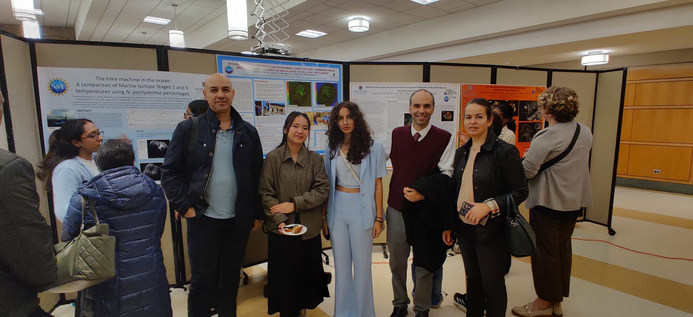

Research with High School Students

High school students in my group do real research, not simulations of it. Through the Hofstra University Summer Science Research Program (HUSSRP), students learn R programming from scratch, work with real scientific data, and carry a project from question to conference poster in a single summer, presenting at a Hofstra University conference poster session.
- Summer 2024: 18 students from schools across the region
- Summer 2025: 27 students, with projects spanning Earth science, climate, geodesy, and biomedical signal analysis
- Summer 2026: 7 students, from New York, New Jersey, California and Indonesia: signal detection and time-series prediction on anesthesia and Alzheimer’s EEG, arrhythmia screening, solar cycles and earthquakes, and GPS filtering; spatial analysis of coastal flooding and satellite shoreline change
- Selected projects continue to external venues, including the ISEF-affiliated Long Island Science and Engineering Fair and a peer-reviewed IEEE International Conference on Healthcare Informatics (ICHI 2026) paper
How the program works
Students meet online through the summer, learning data analysis in R while developing an individual research topic with real datasets: EEG recordings from pediatric seizure patients, continuous GPS displacement, sunspot records, sea-level and groundwater time series, and more. The program culminates in a printed research poster presented at Hofstra University.
The methodology students learn mirrors the group’s research toolkit (time-series decomposition, wavelet analysis, artificial neural networks) and the beginner-first approach of my book R for Earth and Sustainability Data Analytics.
The book behind the program
R for Earth and Sustainability Data Analytics follows the same beginner-first path the students take: no prior coding or statistics experience assumed, working with real Earth and environmental data in R. It is recommended reading for students in the program, never required, and the opening chapter and the quick-start cheat sheet are free.
Free chapter 1 (PDF) Free cheat sheet (PDF) Get it on Amazon About the book →
Research highlight
A HUSSRP project on filtering electroencephalogram (EEG) data was published as a peer-reviewed paper at IEEE ICHI 2026, a professional healthcare-informatics venue:
Pasumarthi, S., Marsellos, A.E., 2026. Filtering Electroencephalogram Data Using R: A Study on Patients with Seizures. 2026 IEEE 14th International Conference on Healthcare Informatics (ICHI), Minneapolis, MN, USA, June 1–3, 2026, p. 1311–1312. IEEE. doi:10.1109/ICHI69079.2026.00190
Posters & papers by high school students
Every poster below was researched, written, and presented by a high school student in the group. Click poster to open the full PDF.
Loading…
Interested in joining?
HUSSRP applications are handled through Hofstra University’s Summer Science Research Program. Feel free to reach out at antonios.marsellos@hofstra.edu to discuss project ideas in Earth science, data analytics, or biomedical signal analysis.